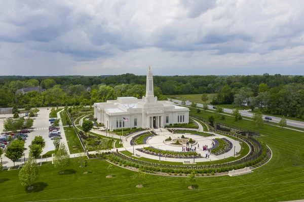

About Carmel, IN

Foundation & History of Carmel
People began settling in Carmel as early as the 1820s. The town was originally known as Bethlehem, until the name was officially changed to Carmel when the town was officially incorporated in 1874.
Carmel's Population
The population of Carmel in 2023 was estimated to be 102,296 according to the U.S. Census Bureau
Geographical Region
Carmel is an suburban city located in the central region of Indiana, and is about 23 miles north of Indianapolis.
Average Income in Carmel
According to the U.S. Census Bureau, the estimated median per capita income was $70,093, making it one of the wealthiest cities in Indiana.